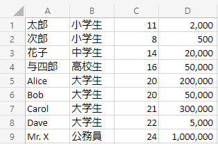

openpyxlでExcelを操る！
- プログラミング
Excel操作が大変なのでどうにかしたい
今どきは、Excelを操作するライブラリが充実しているので、簡単な作業であればネットに書かれているサンプルをコピーして少し書き換えるだけで、すぐに作業を自動化できます。 今回はプログラミング言語pythonを使ってExcel操作の方法を説明して行きます。なお、python自体のインストールや環境構築は既に終わているものとして説明を進めます。
openpyxlのインストール
pythonを使ってExcelの読み書きを行うためにopenpyxlというライブラリをインストールしましょう。以下のコマンドで簡単にインストールできます。
openpyxlの使い方
説明のため次のような内容のExcelファイル(book.xlsx)を用意しました。このファイルを読み込んで、いろいろな操作を行ってみましょう。
まずは、Excelを開いてA1セルの値（今回のExcelでは「太郎」）を出力してみます。
import openpyxl
wb = openpyxl.load_workbook("book.xlsx")
ws = wb["Sheet1"]
print(ws["A1"].value) # ws.cell(1, 1)でも同じ１行目に項目名を入れた方が分かりやすいので、項目名を追加して新しくbook2.xlsxとしてファイルを保存してみます。シートに行を追加するには、関数 insert_rows() を使います。
import openpyxl
wb = openpyxl.load_workbook("book.xlsx")
ws = wb["Sheet1"]
ws.insert_rows(1) # １行目の上に行を追加
ws.cell(1, 1).value = "名前"
ws.cell(1, 2).value = "職業"
ws.cell(1, 3).value = "年齢"
ws.cell(1, 4).value = "所持金"
wb.save("book2.xlsx")このスクリプトを実行すると、Excelファイルは次のようになります。
簡単な分析をやってみる
それでは次に、book.xslxのデータを基に簡単な分析をしてみましょう。職業別の所持金の平均値を求めてみます。
プログラムの流れは次の通りです。
- Excelから１行ずつデータを読込み、職業をキー、所持金のリストを値にした辞書を作成する
（例： { "小学生": [2000, 500], "中学生": [20000] } ）。 - 1.で作成した配列を sum() で足し合わせ、得られた合計を要素の数 len() で割る。
import openpyxl
wb = openpyxl.load_workbook("book.xlsx")
ws = wb["Sheet1"]
# ワークシートのデータが存在する最終行を取得する
bottom_row = ws.max_row
money_data = {}
for i in range(1, bottom_row+1):
if ws.cell(i, 2).value in money_data:
money_data[ws.cell(i, 2).value].append(int(ws.cell(i, 4).value))
else:
money_data[ws.cell(i, 2).value] = [int(ws.cell(i, 4).value)]
for data in money_data.items():
print('{} - {}'.format(data[0], sum(data[1])/len(data[1])))このプログラムの実行結果：
中学生 - 20000.0
高校生 - 50000.0
大学生 - 138750.0
公務員 - 1000000.0
正しく職業別の平均値が得られています。このプログラムであれば、職業の種類が増えてもデータの数が増えても正しく平均値を集計してくれます。
今回紹介した程度の計算であれば、Excelのピボットテーブルを使えばすぐに求めることができます。しかし、同じフォーマットのExcelが100個あって、その中にある全ての数値の平均値を求めたいという状況であれば、プログラムを作成した方が良いでしょう。 Excel自体の機能でもできることは結構あるので、そこら辺の機能を見極めながらプログラミングによるシステム化を検討してみてください。
まとめ
単純な操作を大量に行うのであれば、プログラミングを行って自動化の検討をしてみるべきです。単純なプログラムでも組み合わせれば、それなりに複雑なこともできるので仕事で楽したいと思っている人はぜひプログラミングを学んでみてください。

- 入門 Python 3
- Bill Lubanovic (著), 斎藤 康毅 (監修), 長尾 高弘 (翻訳)
- 出版社 : オライリージャパン
- 発売日 : 2015/12/1